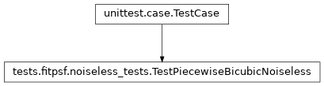

tests.fitpsf.noiseless_tests module
Class Inheritance Diagram
Create noiseless FITS files to test various tools on.
- class tests.fitpsf.noiseless_tests.TestPiecewiseBicubicNoiseless(methodName='runTest')[source]
Bases:
TestCaseTest piecewise bicubic PSF fitting on noiseless images.
- check_results(psf_fit_fname, sources, extra_variables)[source]
Assert that fitted PSF map evaluates to expected PSFs for sources.
- Parameters:
psf_fit_fname – The name of the file produced by fitpsf to check the PSF map of.
sources – The sources argument used to generate the image that was fit. See same name argument of run_test.
extra_variables – A list of the names of any variables in addition to x and y which participate in the PSF fit.
- Returns:
None
- fitpsf_executable = '/Users/kpenev/projects/git/SuperPhot/build/exe/fitpsf/debug/fitpsf'
- run_test(sources, psffit_terms, extra_variables=None)[source]
Assert that a fit of a series of images works exactly.
- Parameters:
sources –
A list of lists of dictionaries specifying the list of sources to fit. Each list of dictionaries specifies the sources to drop on a single image. Each source must contain the following:
x: The x coordinate of the source center.
y: The y coordinate of the source center.
psf_args: The arguments with which to create the PiecewiseBicubicPSF for the source. See PiecewiseBicubicPSF.__init__ for details.
psffit_terms – The terms on which PSF parameters depend on. See –psf.terms argument of the fitpsf command.
extra_variables – A list of the variables in addition to x and y that participate in the fitting terms.
- Returns:
None